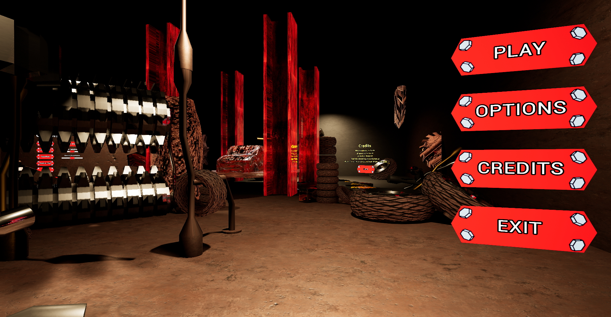
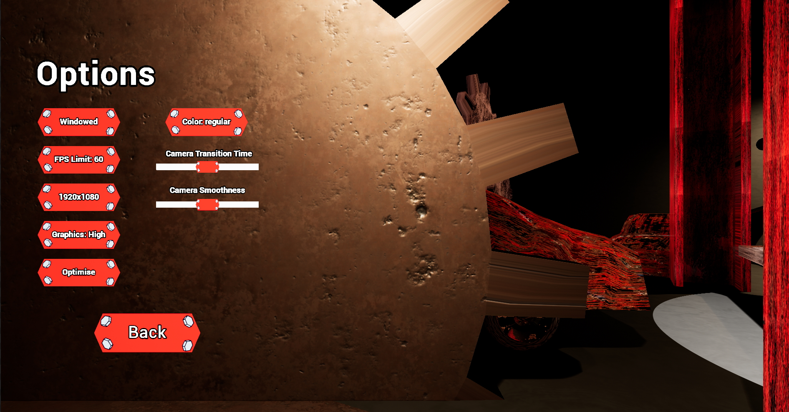

Menu System
I created this diegetic menu system during November 2022, using Unreal Engine 4 with blueprints. This was my first project in Unreal Engine so it was a great learning opportunity.
The menu features 3 elements, the main menu, options menu, and credits. When the user navigates in between these menus with the buttons, the camera glides smoothly through the scenery to bring them to the next menu.

The options menu features many settings including some for accessability, for example the ability to change the movement speed of the camera and to change the colors to be more suitable for individuals with different types of colorblindness.
I also created many simple placeholder models for this project using Blender and applied some included unreal engine textures., as well as sound effects to sell the free flight effect that the camera moving through the environment and the feeling of pressing the buttons.